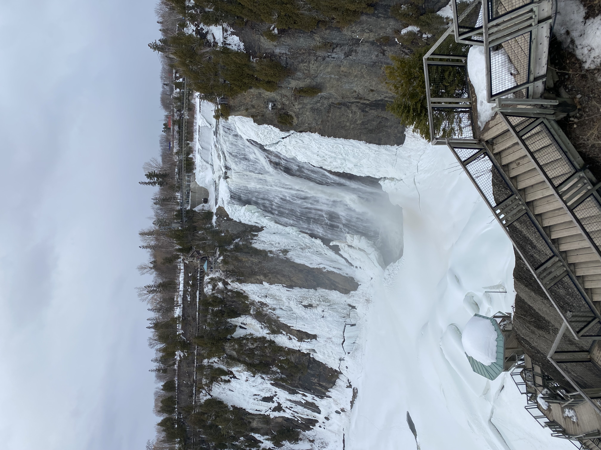

🇳🇿 Travel to New Zealand
I travelled to New Zealand independently while arranging my visa extension to remain in Australia, and it became one of the most memorable trips I’ve ever taken. I spent just under a week in Auckland, exploring the city on my own and embracing the experience of solo travel. Waiheke Island, just off the coast of Auckland, is one of the most beautiful places I’ve ever visited. The scenery was breathtaking, and the atmosphere felt relaxed yet full of life. I also visited Hobbiton, the iconic set from The Lord of the Rings, which was a surreal experience and a definite highlight. Auckland itself was vibrant, welcoming, and full of energy. Travelling alone strengthened my independence and confidence, and New Zealand left a lasting impression on me.

🇨🇦 Travel to Canada
I travelled to Canada during spring break with a German friend while we were studying in the United States. It was just across the border from where we were based, but it felt like a completely different world. It was unbelievably cold - there were blocks of ice floating down the river, and children were playing pick-up ice hockey in the park. Seeing everyday life continue in such extreme weather was something I’ll never forget. We spent time in Montreal, which is an incredible city full of character, culture, and warmth despite the freezing temperatures. We met some wonderful students from McGill University who made us feel very welcome. The trip broadened my global awareness and gave me a deeper appreciation for experiencing new environments alongside new people.
🇺🇸 Travel Around America
While studying in the United States, I was fortunate enough to travel extensively along the East Coast, all the way down to Florida. Experiencing different states showed me just how diverse America truly is. Parts of the country are absolutely stunning, from coastal scenery to dense forests. My uncle lives in Connecticut, where the wildlife and natural landscapes are beautiful and peaceful. In contrast, the cities are fast-paced and culturally very different from the UK, offering new perspectives and experiences at every stop. Living and travelling across the U.S. helped me grow in resilience and adaptability. It pushed me out of my comfort zone and allowed me to engage with people from a wide range of backgrounds.
🇳🇱 Travel to Holland
Travelling to Holland is something I try to do each year through my sport. Over time, I’ve built strong friendships with Dutch players who are exceptional athletes and even better people. Whenever possible, I visit them and their families. These trips are more than just travel - they’re about connection. Spending time with them has given me meaningful insight into Dutch culture and daily life. Holland feels familiar to me now, and these experiences have strengthened not only my sporting relationships but also my appreciation for different cultures and traditions.
.jpeg)